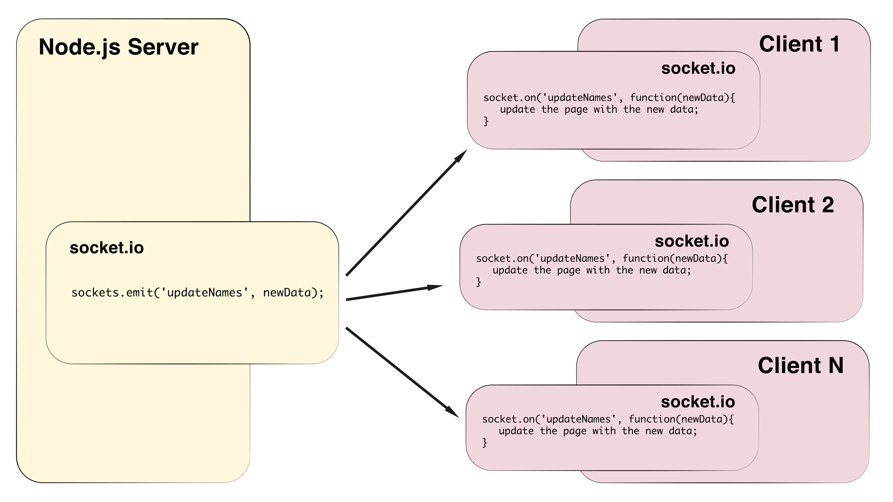

Mixing Physical and Digital: Node.js and Arduino
This video is an introduction to webSockets using socket.io. Socket.io is a javascript library you can use with Node.js to make your web pages dynamic. It allows pages connected to the server to update as soon as there is new data, without the browser having to be manually refreshed.
(show example) https://glitch.com/edit/#!/start-sockets?path=README.md%3A1%3A0
In this example I have multiple windows open, when one page is updated, a socket emits that information to the server. When it receives the information, it emits it to all the other pages that are open so those pages are updated too.
It does this using webSockets. Websocket is a communications protocol, which keeps a persistent connection open between client and server. This means that there is a constant open link between the front end, the web browser and the back end, the server.
Without webSockets a page would either have to be manually refreshed by the viewer, or use HTTP Polling where there is code on the browser side that makes a request to the server to see if there are any updates. WebSockets has lower overhead then HTTP polling, and works well with an Arduino so that the new data can update the project quickly and efficiently.
There is a library called socket.io that implements webSockets. It has a set of functions for passing data between the front end and the server.
Socket.io has paired functions, one that emits information and one that receives information.
Socket.emit is used to emit data, and the socket.on function to receive it. They have matching identification names to recongnize each other.
The functions are paired with matching identification names, socket.on and socket.emit, that have a matching identification name.
The emit can come from the browser (the client) or the server.

Or the server. The first argument in the emit and on function is the identification name, the second argument is a function that can have the new data as its argument. You can then write in the function what you want to do with the data.
Setting up the Node.js project
This video goes through installing the Node modules needed to create a dynamic web page that uses Arduino data. To do this you will be creating a Node.js application, installing 3 modules, express, serialport and socket.io. This project will be the basis of today’s workshop and will be added to in each video.
Express will be used to create the server and routes for the project.
Serialport will be used to get data from the Arduino into the application.
Socket.io will be used to pass data to a web browser without having to have a page refresh.
The Structure of a Node.js project
This video is about the structure of Node.js projects, how to set up the files and folders and link them together. You don’t need to use this structure, but it is the way that a lot of developers structure their project.
Adding Socket.io to the page
In this video I will go through setting up the socket.io code and making the socket.io connection to a web page. You will need to have socket.io installed in your application, if you haven’t,
Adding the serialport module
In this video I will add the serialport code to the Node.js application. I’m going to continue working on the project I started in the video on setting up a node.js project.
Arduino data to a web page
In this video I will go through how to use the data from an Arduino to make changes to a web page Dynamically.
Using the Arduino data with p5.js
Now that you have the data, you can use it to make changes to the content of the page and how it looks. You can also use it to make changes to the html, CSS and other JavaScript libraries such as p5.js. In this video I will go through how using Arduino data to make a p5.js project interactive.
Sending data back to the Arduino
You can also send data from the web page back to the Arduino, so the digital data can trigger physical components. I’m going to do this with an LED, it will light up when the circle is getting close to its maximum or minimum size.